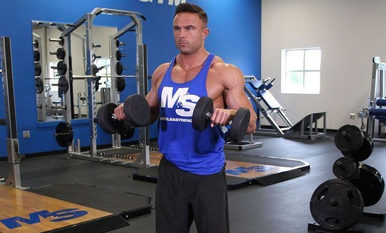
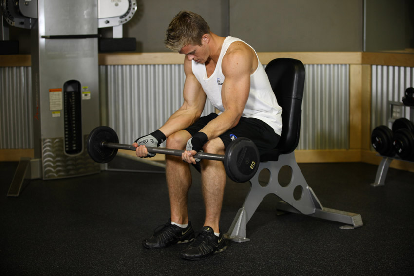
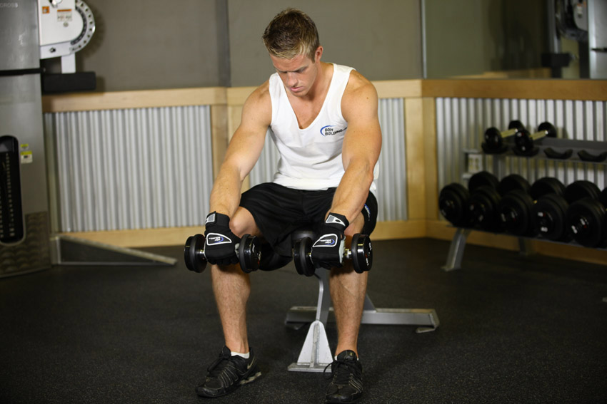
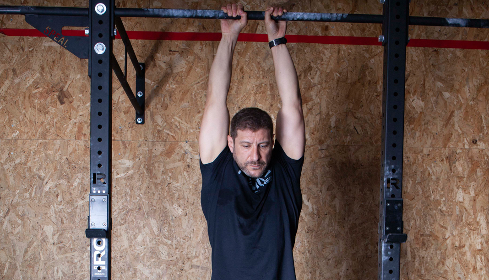

El antebrazo es una región anatómica que abarca desde el codo hasta la muñeca, y contiene múltiples músculos que desempeñan roles importantes en la movilidad y la funcionalidad de la mano, la muñeca y el codo. Aunque a menudo se pasa por alto en comparación con otros grupos musculares más grandes, el antebrazo es esencial para una variedad de actividades diarias y deportivas que implican agarre, levantamiento y manipulación de objetos. Este músculo es bastante estimulado en ejercicios como peso muerto y demás ejercicios de espalda y bíceps.
Esta variante del curl esta enfocada principalmente en los músculos del antebrazo. Es un ejercicio que trabaja la intersección entre ambas apartes del brazo al enfocarse en los braquiales y braquioradiales. Si bien el nombre del ejercicio involucra "curl", este estimula poco y nada los bíceps. El Curl Invertido consiste en hacer un curl con las palmas de la manos mirando hacia abajo, puedes hacerlo con mancuernas o con una "Barra Z". Haz este ejercicio si quieres tener un brazo y antebrazo más grueso y fuerte.
Este ejercicio es el mejor de todos, a nuestro conocimiento, para desarrollar el antebrazo. A diferencia del ejercio anterior, este involucra solamente los músculos del antebrazo, especificamente los flexores el cual es el músculo más grande de la zona. Consiste en hacer un movimiento de flexión con la muñeca con las palmas hacia arriba. Lo puedes hacer con barra, con mancuerna, sentado, parado, de lado, de frente.. Hay muchas formas de realizarlo, yo te recomiendo realizarlo con una barra y sentado como se ve en la imagen.
El curl de muñeca con agarre prono es un ejercicio que se dirige principalmente a los músculos extensores del antebrazo, especialmente el extensor radial largo del carpo y el extensor radial corto del carpo. Es un buen ejercicio para el desarrollo del antebrazo.
Este ejercicio implica colgarse de una barra con los brazos completamente extendidos y el cuerpo suspendido en el aire. Aunque parece simple, colgar de la barra es un ejercicio efectivo para fortalecer los músculos de la espalda, los hombros, los brazos y el agarre. Principalmente trabaja el agarre, lo cuál es función del antebrazo.
